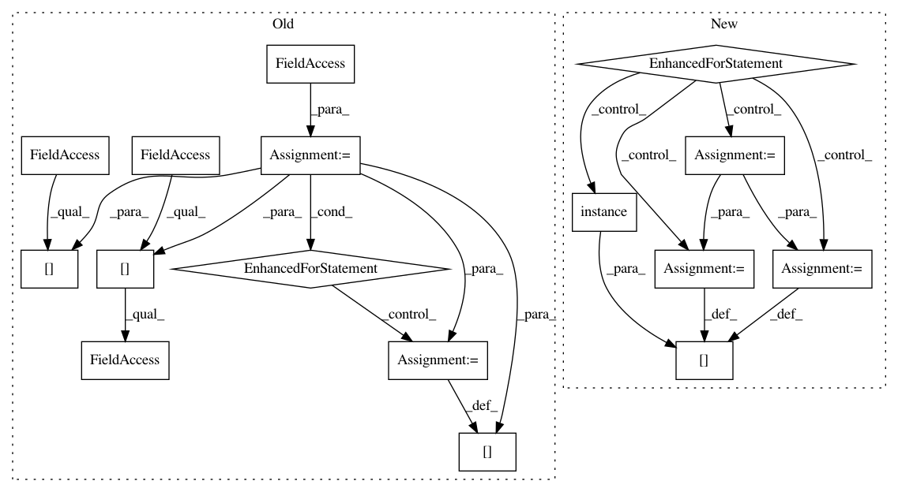

f0e38a44c09452fc4675681a4e45c3c69612c791,nilmtk/metrics.py,,error_in_assigned_energy,#,30
Before Change
"""
error = {}
for appliance in predicted_power:
ground_truth_energy = np.sum(
df_appliances_ground_truth[appliance].values)
predicted_energy = np.sum(predicted_power[appliance].values)
error[appliance] = np.abs(predicted_energy - ground_truth_energy)
return error
def fraction_energy_assigned_correctly(predicted_power, df_appliances_ground_truth):
After Change
in kWh.
errors = {}
for meter in predictions.meters:
ground_truth_meter = ground_truth[meter.instance()]
sections = meter.good_sections()
ground_truth_energy = ground_truth_meter.total_energy(timeframes=sections)
predicted_energy = meter.total_energy(timeframes=sections)
errors[meter.instance()] = np.abs(predicted_energy - ground_truth_energy)
return errors
//////////////////// FUNCTIONS BELOW THIS LINE HAVE NOT YET CONVERTED TO NILMTK v0.2 //////////
In pattern: SUPERPATTERN
Frequency: 3
Non-data size: 16
Instances
Project Name: nilmtk/nilmtk
Commit Name: f0e38a44c09452fc4675681a4e45c3c69612c791
Time: 2014-07-09
Author: jack-list@xlk.org.uk
File Name: nilmtk/metrics.py
Class Name:
Method Name: error_in_assigned_energy
Project Name: nilmtk/nilmtk
Commit Name: 9ce99b87ced85d30b755c4bf8e94b1d592b963bd
Time: 2014-07-10
Author: jack-list@xlk.org.uk
File Name: nilmtk/metrics.py
Class Name:
Method Name: rms_error_power
Project Name: nilmtk/nilmtk
Commit Name: b523b464d8cafe29e352981c1c6df941f205592a
Time: 2014-07-09
Author: jack-list@xlk.org.uk
File Name: nilmtk/metrics.py
Class Name:
Method Name: mean_normalized_error_power